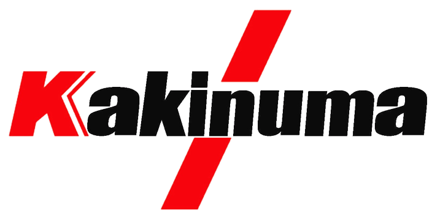

ものづくりの創造力で課題を解決し、
お客様と共に成長しながら、
社員・地域・社会の発展に貢献する。
| 会社名 | 株式会社柿沼製作所（KAKINUMA SEISAKUSHO Co., Ltd.） |
|---|---|
| 代表者 | 代表取締役 柿沼 一成（2代目） |
| 創業 | 昭和47年（1972年）10月 |
| 資本金 | 1,000万円 |
| 従業員数 | 12名（30代・50代・70代の多世代構成） |
| 所在地 | 〒286-0212 千葉県富里市十倉302-42 |
| TEL / FAX | 0476-93-3730 / 0476-92-4475 |
| issei.k@kakinumass.co.jp | |
| 事業内容 | 精密板金加工（3D設計・レーザー・パンチプレス・ベンディング・溶接・研磨・表面処理） |
| 主要設備 | アマダ製で統一（LC-1212αⅣNT / AC255NT / PEGA244 / HG8025 / CTS-900NT） |
昭和47年10月、千葉県富里市にて板金加工業として創業。
先代の時代から三協リール（TRIENS）様と長年にわたるお取引を継続。
レーザー・パンチ・曲げ・タッピングをアマダ製で統一し、自社一貫生産体制を構築。
柿沼一成が20代で2代目を継承。3D-DFM提案を強みに、多業界への対応を拡大。
熟練職人の手作業品質を守りつつ、IoT・ロボット等の新技術導入と「楽しいものづくり環境」づくりを推進。
〒286-0212 千葉県富里市十倉302-42 ／ 成田空港にほど近い立地です。
見積・技術相談・採用、どんなことでもどうぞ。